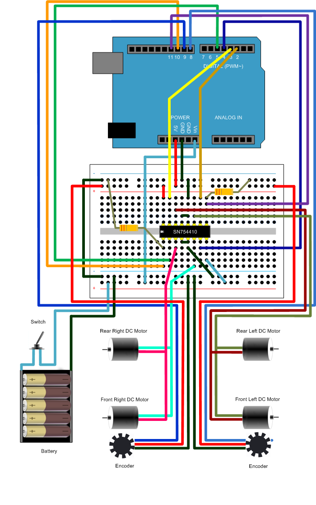
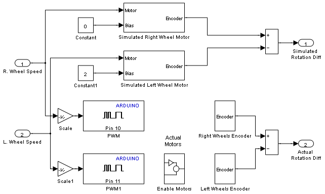
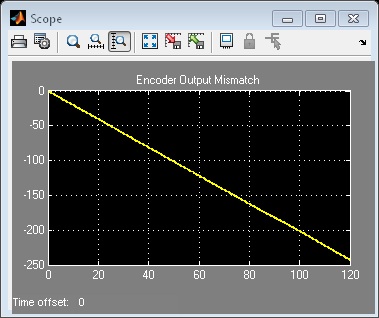
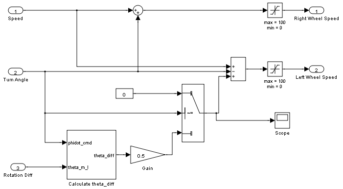
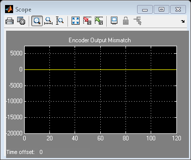

Drive with PID Control
This example shows how to simulate a simple closed-loop control algorithm in Simulink® and how to run it on an Arduino® Uno board.
Contents
- Introduction
- Prerequisites
- Required Hardware
- Task 1 - Build the Vehicle
- Task 2 - Build the Motor Controller
- Task 3 - Simulate Open-Loop Control Model
- Task 4 - Run Open-Loop Control Model on the Arduino Uno Board
- Task 5 - Simulate Closed-Loop Control Model
- Task 6 - Run Closed-Loop Control Model on the Arduino Uno Board
- Other Things to Try
- Summary
Introduction
In a vehicle using independent wheel control, applying the same power to each wheel generally does not result in the vehicle moving straight. This is caused by mechanical and surface differences experienced by each of the wheels. To reduce deviation in the vehicle heading, a better approach is to use a closed-loop controller which adjusts the power applied to two motors based on the difference in their rates of rotation. One such controller is a well-known proportional–integral–derivative (PID) controller.
PID control is a basic control loop feedback mechanism. The controller minimizes the difference between the measured and the desired value of a chosen system variable by adjusting the system control inputs.
This example shows you how to simulate the controller using a simple plant model, first with no feedback control (Open-Loop Control), and then with feedback control (Closed-Loop Control). This example also illustrates how to switch between simulating the PID controller and running it on hardware in the same model.
Prerequisites
We recommend completing Getting Started with Arduino Uno Hardware.
Required Hardware
To run this example you will need the following hardware:
Controller board:
- Arduino Uno board
- USB cable
Motor controller parts:
- Texas Instruments™ SN754410 quadruple high-current half-H driver
- Two 10 kOhm resistors
- Small breadboard
- Breadboard wires
A four-wheel vehicle:
- A mobile platform with four wheels powered by four DC motors
- Two optical encoders wired to front DC motors
- A battery pack consisting of five AA 1.5V batteries
- A single pole, single throw (SPST) switch
Notes:
- This example was tested with the four-wheel vehicle built using DFRobot 4WD Arduino-Compatible Platform w/Encoders.
- Other vehicle kits can be used as long as they have the same mechanical characteristics (four wheels, four DC motors and two encoders).
- With a minor modification to the controller connections, a vehicle with only two DC motors can be used as well.
- Encoders used in this example are ten-step encoders. Different encoders can be used with minor modifications to the example models.
Task 1 - Build the Vehicle
1. Assemble the mobile platform. Attach the two DC motors with encoders to the front wheels.
2. Attach the other two DC motors to the rear wheels. If your platform has only two DC motors, let the rear wheels rotate freely.
3. Assemble the battery pack and attach it to the mobile platform using suitable fasteners.
4. Connect the positive end of the battery pack to the switch using the breadboard wires.
Note: If you are using DFRobot 4WD Arduino-Compatible Platform w/Encoders kit, follow the vendor's instructions.
Task 2 - Build the Motor Controller
The Arduino Uno board alone cannot provide high enough current to power DC motors. For that purpose, you will build the motor controller based on the Texas Instruments SN754410 quadruple high-current half-H driver.
1. Assemble the motor controller using the following circuit diagram.

2. Connect the controller to the vehicle battery pack following the same circuit diagram.
Task 3 - Simulate Open-Loop Control Model
This step illustrates that independently powered wheels cause deviations in vehicle heading.
1. Open the model. Observe two subsystems in the model.
2. Open the Open-Loop Controller subsystem. This subsystem controls the vehicle driving. Observe that the controller does not use the difference between two encoder outputs to control the motors.
3. Notice the Motors subsystem. The subsystem contains both simulated and actual motors. The Environment Controller block takes the outputs of the simulated or actual motors, depending on the current environment. This allows you to represent both simulated and actual motors in one model. As an alternative, you may create two models, one for simulation, and the other one for running on actual hardware.
4. Click Start simulation in the Simulink toolbar. Click the Scope block and observe that the Encoder Output Mismatch increases over time. This indicates that the vehicle will not move straight.
 Task 4 - Run Open-Loop Control Model on the Arduino Uno Board
1. Disconnect the battery power wire leading to the Vin terminal on the Arduino Uno board since the board will get powered via a USB cable.
2. Connect the Arduino Uno board to your host computer using USB cable.
3. Select Tools > Run on Target Hardware > Run to download the example model.
4. After the model is downloaded, disconnect the USB cable from your Arduino Uno board.
5. Connect back the battery power wire leading to the Vin terminal on your Arduino Uno board.
6. Place the vehicle on the ground and turn the vehicle switch on. The model runs on the board and the vehicle starts moving.
7. Notice that the path of the vehicle is not straight, as predicted by the simulation.
8. Turn the vehicle switch off.
Task 5 - Simulate Closed-Loop Control Model
1. Open the model. Observe two subsystems in the model.
2. Double-click PID Controller subsystem. Notice that the proportional (P) control is used to synchronize two motors when the vehicle runs straight. Also, notice that during a turn, no synchronization is applied.
3. Click Start simulation in the Simulink toolbar. Click the Scope block and observe that the Encoder Output Mismatch remains close to zero. This indicates that the vehicle will skew less compared to the Open Loop Control model.
 Task 6 - Run Closed-Loop Control Model on the Arduino Uno Board
1. Disconnect the battery power wire leading to the Vin terminal on the Arduino Uno board since the board will get powered via a USB cable.
2. Connect the Arduino Uno board to your host computer using USB cable.
3. Select Tools > Run on Target Hardware > Run to download the example model.
4. After the model is downloaded, disconnect the USB cable from your Arduino Uno board.
5. Connect back the battery power wire leading to the Vin terminal on your Arduino Uno board.
6. Place the vehicle on the ground and turn the vehicle switch on. The model runs on the board and the vehicle starts moving.
7. Observe that the path of the vehicle is straighter, as predicted by the simulation.
8. Turn the vehicle switch off.
Other Things to Try
- Adjust the PID Controller settings. Improve the vehicle's ability to move straight on a rough or tilted surface.
Summary
This example showed how to simulate and implement a basic closed-loop controller on an Arduino Uno board. In the example you learned that:
- Open-Loop Control does not ensure straight driving in a vehicle with independently powered wheels.
- Closed-Loop Control uses the difference between two encoder outputs to calculate the power that should be applied to each wheel individually.
- Both simulated and actual hardware may be used in the same model, provided that a mechanism for switching between them exists.